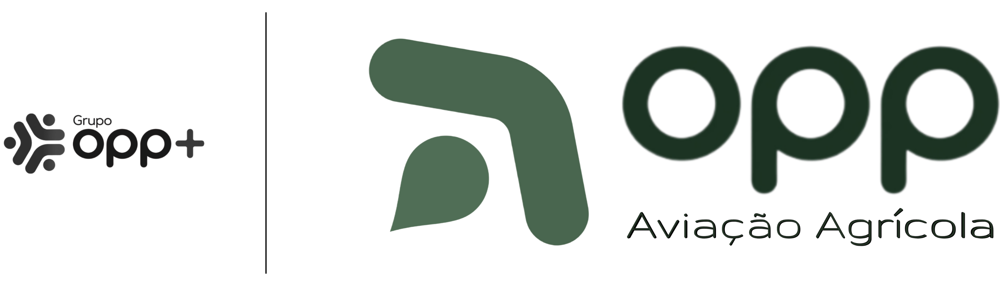

Adesivagem de frota
Três caminhões-comboio e uma caminhonete, todos brancos. Adesivo aqui é identificação, não propaganda: o padrão abaixo diz o mínimo necessário para saber de quem é o veículo — e nada além disso.
Identificar, não anunciar
A aviação agrícola trabalha num campo onde o julgamento chega antes da informação, e a palavra "agrícola" ao lado de um avião convida a uma leitura que não se corrige no acostamento. Mas Opp Aviação Agrícola Ltda é a razão social — a empresa que existe no CNPJ, a que responde pelo veículo. Grupo Opp+ é nome de marketing, sem registro próprio. Identificar a operadora não é opção: é obrigação. A questão nunca foi se aparece, e sim em que tamanho e em que lugar.
A resposta é escala de identificação, não de anúncio: o lockup vai no primeiro terço da porta, junto à coluna dianteira, dimensionado para ser distinguido a 10 a 15 metros — a distância de quem chega ao veículo, do posto, do pátio, da fiscalização. Quem cruza a 100 km/h vê uma frota identificada e organizada, não uma mensagem. Peça centralizada ocupando a porta inteira está fora: centro de porta é posição de outdoor.
Quando os dois logos aparecem juntos, aparecem no lockup oficial — Aviação, filete vertical fino, Grupo em escala menor. É o filete que transforma dois logos numa assinatura só. Fora dele, nunca dividem a mesma superfície.
Daí a regra de cor do Grupo Opp+: preto quando está no lockup, porque ali em cor disputaria com o verde da Aviação e o filete deixaria de separar duas marcas para virar enfeite entre duas peças coloridas. Colorido quando anda sozinho — na traseira, no timbrado, na assinatura de e-mail —, onde não há com quem competir e a cor é o que faz a marca ser reconhecida de longe e lembrada depois.
O contato segue a mesma hierarquia, e cada peça leva o seu: o lockup leva o WhatsApp — quem vê o veículo na estrada e quer falar sobre serviço, safra ou o próprio caminhão fala com quem opera. O Grupo Opp+ leva o endereço do site — informação da casa, para quem quer conhecer o grupo. Nunca os dois na mesma peça.

A Aviação vem sempre na frente da barra
Nas asas a arte troca de ordem entre um lado e outro, e por um motivo que vale para o veículo inteiro: quem identifica a operadora vem primeiro no sentido do movimento. Do lado esquerdo, o lockup normal já cumpre isso — a Aviação fica à frente da barra separadora, voltada para a dianteira. Do lado direito, a mesma peça ficaria ao contrário, com o Grupo puxando a frente e a Aviação atrás. Por isso o lado direito recebe uma versão de ordem invertida: os blocos trocam de lugar em torno da barra, mas nada é espelhado — texto, símbolo e a gota ascendente ficam como são. Inverter o desenho seria mexer na marca; aqui só se inverte a ordem.

Códigos para o adesivista
Cores medidas na própria arte aprovada, não escolhidas de novo. O adesivista trabalha com estes valores e nenhum outro — se pedir "um verde parecido", a resposta é o hexadecimal abaixo.
{{ c.cmyk }}
Laterais das asas — arte aprovada
Identificação da empresa operadora nas asas é exigência da aviação agrícola, não escolha de marketing. A arte abaixo está aprovada e é a referência para as demais aeronaves da frota.

Onde vai cada peça
A frota é branca e o padrão é preto — mas basta entrar uma caminhonete prata, um veículo escuro ou um alugado para o preto sumir no fundo. Para esse caso existe a versão em branco, monocromática: mesma arte, mesmas proporções, mesma barra, sem verde. Verde escuro sobre superfície escura não lê a 10 m — em fundo escuro a peça é branca inteira, nunca meio-a-meio. Vale para o lockup e para o Grupo Opp+ sozinho.


Veículo vendido, devolvido ou baixado sai sem nenhum adesivo da marca. Um caminhão com a nossa porta rodando por conta de outro dono continua parecendo nosso na estrada — e responde por manobra, acidente e reclamação que não são nossos. A remoção é condição de entrega, não cortesia.
Quem manda no tamanho é a distância de leitura, não o veículo. Por isso o padrão tem duas medidas e nenhuma exceção: 35 cm no caminhão, 30 cm em tudo que é leve — caminhonete, carro de passeio, pick-up pequena. Uma pick-up compacta tem porta menor, mas 30 cm nela ainda é identificação; descer abaixo disso perde a leitura a 10–15 m e não resolve nada. Duas medidas o adesivista não erra; cinco, sim.
Como fica no veículo
Desenhos em escala real — cada unidade do traçado é um centímetro do veículo, então o tamanho do adesivo em relação à porta é o tamanho verdadeiro. Serve para decidir a proporção antes de cortar vinil, não para substituir a prova no veículo.
Painel de segurança alaranjado, rótulos de risco e demais sinalizações de produto perigoso são exigência legal, não identidade. Nenhum adesivo da marca pode cobrir, tocar, emoldurar ou imitar essas peças — nem usar laranja/vermelho por perto. Regra prática para o adesivista:
A pergunta é boa e a resposta não é óbvia. Pesando os dois lados:
O ganho real que o adesivo promete — mostrar que a empresa responde pela condução — o WhatsApp na porta já entrega, com muito mais elegância e sem prometer um canal de ouvidoria que não existe. Se um cliente grande exigir por contrato, aí sim: peça padrão, discreta, na traseira, longe do lockup, e com o número de um responsável que atende.
Junto vai esta página impressa em PDF — ela é a ordem de serviço. O lockup é arte própria da casa, com editável no Canva: se o adesivista precisar de outro formato ou de outra escala, o arquivo sai de lá em PNG transparente, PDF ou SVG — não se pede vetorização a terceiros nem se aceita logo redesenhado por fornecedor.